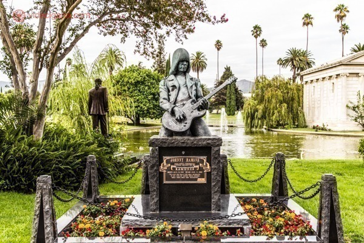
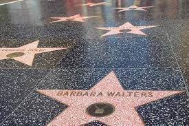

Hollywood Forever
Um dos cemitérios mais famosos dos Estados Unidos
é o Hollywood Forever, onde as maiores estrelas
da Era de Ouro de Hollywood eram enterradas.
Hollywood Walk of Fame e Chinese Theater
Ao visitar Los Angeles, todos pensam logo em ir
até Hollywood, onde o cinema norte-americano começou.
E uma das maiores atrações da cidade fica lá,
a Calçada da Fama, ou em inglês,
a “Hollywood Walk of Fame”. Ao longo de 2 quilômetros
da Hollywood Boulevard e mais de 700 metros da Vine Street
se encontram mais de 2500 estrelas no chão, homenageando
artistas do ramo do cinema, música, teatro, televisão e rádio.
Como os nomes das maiores celebridades estão ali,
é bastante divertido ir andando pela rua olhando para o chão
e procurando os seus artistas preferidos.
Griffith Observatory

O Griffith Observatory é um dos melhores pontos da cidade de Los Angeles
para ver o Letreiro de Hollywood e todo o horizonte da cidade,
principalmente durante o pôr do sol. Além disso, é um observatório
com inúmeros telescópios para ver a lua e alguns planetas.